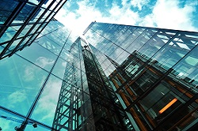

A i-Design nasceu com um sonho simples, mas grandioso: transformar
espaços e ideias em algo único, belo e funcional.Somos uma empresa 100%
mineira, com a sede em Juiz de Fora, uma cidade que representa a
alma de Minas Gerais: acolhedora, criativa e repleta de história.
Mas, ao longo dos anos, a nossa paixão pela arquitetura e pelo design nos levou a
expandir nossos horizontes. Hoje, com escritórios em diversas
cidades do Brasil, nossa presença se estende de norte a sul, refletindo nossa
capacidade de adaptação, inovação e compromisso com a qualidade.clique aqui para ver a história completa

Nosso portfólio reflete a diversidade e a qualidade que buscamos em cada projeto. Com uma vasta
experiência, desenvolvemos soluções arquitetônicas inovadoras e funcionais, abrangendo desde
residências privadas, como casas e apartamentos, até grandes construções comerciais e corporativas.
Nosso trabalho também inclui uma ampla variedade de ambientes internos e externos, com foco na
integração harmônica entre design e funcionalidade. Cada projeto é concebido com um olhar atento às
necessidades e desejos dos nossos clientes, respeitando o contexto urbano e ambiental.clique aqui para ver nosso portifólio